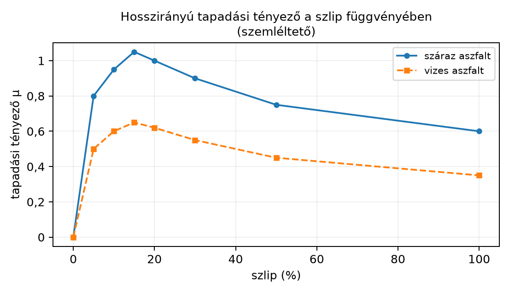

Az autószerelő műhelyben naponta találkozol cserére szoruló gumiabronccsal, keréktárcsával és guminyomás-figyelmeztetéssel. Az ügyfél gyakran így érkezik: „a gumi kopott”, „a kerék megütődött a kátyúban”, „világít a nyomásfigyelő lámpa”, vagy „téligumira szeretném cseréltetni a nyári kereket”. Ugyanaz a tünet – például egyenetlen futófelület-kopás – lehet gumiabroncs-, futómű- vagy guminyomás-probléma. Ha nem tudod helyesen értelmezni a kerék és az abroncs jelöléseit, nem tudod megállapítani, hogy a javasolt csereabroncs biztonságosan használható-e, és félrediagnosztizálhatod a kopásképet.
Képzelj el egy személygépkocsi kerekét: a középpontban a keréktárcsa van, amelyet öt kerékcsavar rögzít az agyhoz. A tárcsa anyaga lehet préselt acéllemez vagy öntött/kovácsolt könnyűfém. A tárcsa peremére a tömlő nélküli, radiál szerkezetű gumiabroncs ül. Az abroncs belsejében levegő van, a belső légzáró réteg biztosítja a tömítést. A futófelület bordákkal és lamellákkal tagolt, az oldalfal hajlékony, a perem merevített. A kerékhez tartozik a szelep, valamint a kerékkiegyensúlyozó súlyok; gyakran a szelepszárra építik a guminyomás-érzékelőt.
A tapadás és a kerék szlipjének kapcsolata mutatja, miért fontos az abroncs és az elektronikus menetstabilizáló rendszerek együttműködése:

Amíg a szlip kicsi, a tapadási tényező meredeken nő; a csúcs után a tapadás csökken, tehát a nagyon nagy szlip nem eredményez nagyobb fékerőt vagy vonóerőt. Az ABS és a menetstabilizáló rendszer ezt a csúcs körüli tartományt próbálja tartani.
Definíció. A keréktárcsa a járműkerék merev, csavarozott központi eleme, amely az abroncsot a kerékagyhoz köti. A gumiabroncs a kerék külső, rugalmas, levegő- vagy támasztóelem-töltésű része, amely a jármű terhét viseli, és fékezéskor, hajtáskor, valamint kanyarodáskor a tapadási erőt átadja az útnak.
Definíció. A gördülési sugár () az a fiktív sugár, amellyel a terhelt, gördülő kerék kerületi sebességét és a jármű haladási sebességét egymáshoz rendeljük:
ahol a járműsebesség, a kerék szögsebessége. A gördülési sugár kisebb a szabad sugaránál, mert a jármű tömege a talaj felé deformálja az abroncsot.
Definíció. A szlip (slip; „csúszás”) a kerék kerületi sebessége és a jármű haladási sebessége közötti viszonylagos eltérés. Hajtás/gyorsítás közben:
fékezés közben:
A szlipet gyakran százalékban adjuk meg. Blokkolt keréknél , tehát a fékezési szlip 100%.
Definíció. A kúszás (oldalkúszás, side slip) az abroncs oldalirányú elmozdulása oldalerő hatására. Kanyarodáskor az abroncs futóiránya kis szöggel eltér a haladási iránytól; ez az oldalvezetési szög.
Definíció. A guminyomás-ellenőrző rendszer (Tyre Pressure Monitoring System, TPMS) a kerékabroncsok légnyomását vagy annak csökkenését figyeli, és figyelmezteti a vezetőt.
A keréktárcsa feladata az abroncs rögzítése, a kerékagyra való csavarozás és a fék hőjének elvezetése. Anyaga szerint megkülönböztetünk:
A tárcsa jelölése például:
Itt: a tárcsa belső szélessége hüvelykben, a peremprofil, a tárcsa átmérője hüvelykben, a besajtolási mélység (ET, offset) , pedig öt csavarlyukat jelent -es osztókörön. A besajtolási mélység a tárcsa középsíkja és a felfekvő felület távolsága mm-ben; nagyobb ET-nél a kerék beljebb (a futómű felé), kisebbnél kijjebb kerül a kerékjáratban.
A modern személyautó-abroncs radiál szerkezetű: a szövetváz szálai a haladási irányra merőlegesen, a futófelület alatti övszálak pedig kerületben futnak. Ez stabil futófelületet és kisebb gördülési ellenállást ad. A fő részek:
A személyautó-abroncs oldalán lévő jelölés például:
A jelentés:
| Jelölés | Jelentés |
|---|---|
| névleges szélesség mm-ben | |
| sorozat: a profil magassága a szélesség 55%-a | |
| radiál szerkezet | |
| tárcsa átmérője hüvelykben | |
| terhelési index (load index, LI) | |
| sebességindex (speed symbol, SI) |
A terhelési index és a sebességindex gyakori példái:
| Terhelési index | Terhelés (kg) | Sebességindex | Legnagyobb sebesség (km/h) |
|---|---|---|---|
| 87 | 545 | S | 180 |
| 91 | 615 | T | 190 |
| 94 | 670 | H | 210 |
| 97 | 730 | V | 240 |
| 100 | 800 | W | 270 |
Az értékek tanulási példák (ellenőrizendő: a hatályos abroncsszabvány és a gyártói adat).
A DOT-kód a gumiabroncs oldalfalán például
DOT XXXX XXXX 2523. Az utolsó négy számjegy a gyártási hét
és év: a 2523 a 2023-as év 25. hetét jelenti. A gumiabroncs
öregszik, ezért a gyártási időt is figyelembe kell venni.
A téli abroncsot a háromhegyű hópihe/3PMSF (Three Peak Mountain Snow
Flake) szimbólum vagy hagyományosan az M+S jelölés
azonosíthatja. Az M+S önmagában nem mindig teljes értékű
téli abroncs.
Az ábra (a) része a jelölés tagjait számozza, a (b) metszet a futófelületet, az övet, a szövetvázat, a peremet és a belső légzáró réteget mutatja, a (c) oldalnézet a profilmagasságot, a tárcsaátmérőt és a külső átmérőt. A HTML-kiadás kalkulátorában két abroncsméret adható meg; kiszámolja a , és a kerület értékét, az átmérő-eltérést százalékban, valamint azt, hogy 100 km/h kijelzett sebességnél mekkora a valódi sebesség.
Az abroncs a talajjal akkor tud erőt átadni, ha a keréknek kicsiny szlipje van. A tapadási tényező a szlip függvényében először nő, majd csökken. Ezért a túlzott kipörgés vagy blokkolás rontja a vonó-, illetve fékerőt, és gyorsítja a kopást.
A gumiabroncsnyomás közvetlenül befolyásolja a gördülési ellenállást, a tapadást és a kopásképet:
Az ábrán a sötétebb sáv a jobban kopott rész. Az egyenletes kopás a helyes kép; a két váll kopása alacsony, a középső sáv kopása túl nagy nyomásra utal, az egyoldali kopás futóműbemérést, a csészés kopás a lengéscsillapító, a kerékcsapágy és a kiegyensúlyozás vizsgálatát kívánja. A profilmélység a barázdákban lévő TWI-bütyökhöz mérhető (1,6 mm, ellenőrizendő: hatályos hazai előírás).
A direkt TPMS minden kerékben nyomás-/hőmérsékletérzékelőt használ, és rádiós úton küldi az értékeket a vevőegységnek. Előnye a pontos, kerékenkénti nyomásérték; hátránya az érzékelőelem és a szelepszár szerelési költsége.
Az indirekt TPMS nem mér nyomást, hanem az ABS-jeladók kerékfordulatszámai alapján figyeli a gördülőkör-különbséget. A leeresztett abroncs gördülési sugara kisebb, ezért az adott kerék gyorsabban forog; a rendszer ebből jelez. Az indirekt rendszer olcsóbb, de általában nem ad meg kerékenkénti abszolút nyomást, és hosszabb egyenes úton tanul.
A defekttűrő (run-flat) abroncs megerősített oldalfallal vagy belső támasztógyűrűvel rövid távolságon, csökkentett sebességgel továbbgurul akkor is, ha a légnyomás elveszett. Ennek használatához a járműnek többnyire TPMS-sel kell rendelkeznie, mert a vezető másképp nem veszi észre a defektet.
Előírás. A közúti járművek forgalomban tartásának műszaki feltételeiről szóló hazai rendelet a gumiabroncsokra minimális profilmélységet, a futófelület és az oldalfal sérülésmentességét, valamint az azonos tengelyen azonos méretű és szerkezetű abroncs alkalmazását írja elő (ellenőrizendő: 6/1990. (IV. 12.) KÖHÉM rendelet hatályos szövege, gumiabroncs-követelmények). A személygépkocsi-abroncsok ENSZ-EGB jóváhagyását az ECE 30. előírás, a haszongépjármű-abroncsokét az ECE 54. előírás szabályozza (ellenőrizendő: az adott járműkategóriára alkalmazandó ECE-előírás pontos száma). Az új járművekre a guminyomás-ellenőrző rendszer beépítését uniós járműbiztonsági előírás teszi kötelezővé (ellenőrizendő: a hatályos uniós rendelet, például (EU) 2019/2144 alkalmazási köre és határideje).
Számítás. Számítsuk ki a abroncs külső átmérőjét.
Adott: , sorozat , tárcsaátmérő hüvelyk.
Keresett: külső átmérő.
Képlet:
Behelyettesítés:
Eredmény: a külső átmérő . Ellenőrzés: a kerület , ami egy személyautó-keréknél reális.
Számítás. Hasonlítsuk össze a és a abroncs külső átmérőjét.
Adott: az első abroncsnál , . A másodiknál a sorozat ugyanaz, de a szélesség .
Keresett: , valamint az eltérés százalékban.
Képlet:
Behelyettesítés:
Eredmény: a abroncs -rel nagyobb külső átmérőjű, ami eltérés. Ellenőrzés: a járműgyártók általában csak körüli eltérésig engedélyezik a csereabroncs használatát, mert nagyobb eltérés megváltoztatja a sebességmérőt, a fokozati áttételezést és az ABS/ESP kalibrációt (ellenőrizendő: gyártói előírás). Ezért ez a csere így nem ajánlott.
Szabály. Csereabroncsnál ne csak a tárcsaátmérőt, hanem a teljes külső átmérőt és a kerületet is ellenőrizd. Ha az eltérés meghaladja a járműgyártó által megadott értéket (jellemzően körül), válassz más méretet, vagy végeztess utókódolást, ahol a gyártó engedi (ellenőrizendő).
A kerék és a gumiabroncs átvizsgálásakor a következőket ellenőrizd:
Figyelem. Kerékcsere közben a járművet csak a gyártói emelési ponton emeld, és a jármű alá kizárólag bakra támasztva menj; csak kocsiemelővel tartott jármű alá bemenni tilos.
Környezetvédelem. A hulladék gumiabroncsot a kijelölt gyűjtőhelyen add le; elégetni vagy illegálisan lerakni tilos. A használt abroncs újrafutózható vagy darált gumiként újrahasznosítható (ellenőrizendő: a hulladékjegyzék szerinti besorolás és kezelési előírás).
Egy ügyfél a műhelybe hozza a személyautóját, mert a jobb első gumi belső széle feltűnően gyorsabban kopik, és a kormány balra húz. A szemrevételezéskor a jobb első gumi belső profilmélysége , a külsőé . A futóműbemérő a jobb első kerék dőlésszögét -nek méri, a gyári tűrés (ellenőrizendő: a jármű gyártói adata). A lengéscsillapító-vizsgálat a jobb első csillapítót a gyári értékhez képest -kal gyengébbnek mutatja. A javítás: a jobb első lengéscsillapító cseréje, a dőlésszög beállítása, majd új gumiabroncs szerelése és próbaút. A tanulság: a kopáskép nemcsak a gumiabroncs hibája, hanem a futómű-diagnosztika bemenete; a tünetet nem elég a gumicserével megszüntetni.
Hiba. A szerelő csak a futófelület közepét méri meg, és azt mondja, van még a gumiban, miközben a belső váll már szövetig kopott. Helyes gyakorlat. A profilmélységet mindig a teljes futófelület belső–középső–külső pontján mérd.
Hiba. A DOT-kód 2523 utolsó négy
számjegyét úgy olvassa, hogy 2025. év 23. hete, vagy 25. nap, 2023.
Helyes gyakorlat. Az első két számjegy a hét, az utolsó
kettő az év: 2523 = 2023. 25. hete.
Hiba. A csereabroncsnál csak a tárcsaátmérőt vizsgálja, és a méretet elfogadja a helyett, mert „úgyis 16-os”. Helyes gyakorlat. Számítsd ki a külső átmérőt, és ellenőrizd a gyártói tűrést; ha kell, válassz más sorozatot vagy szélességet.
Hiba. A TPMS szenzoros kereket úgy szereli, hogy a régi szelepszárat a szenzorral együtt átteszi az új abroncsba, de nem cseréli a tömítést/csavart a gyártó szerint, vagy az indirekt TPMS kalibrálását elfelejti. Helyes gyakorlat. Kövesd a gyártói utasítást a szenzorszerelésre, és végezd el az indirekt rendszer újratanítását/próbaútját.
2523 = 2023. 25. hete.1. feladat (A). Számítsd ki a abroncs profilmagasságát és külső átmérőjét mm-ben.
2. feladat (A). A jelölés minden tagját értelmezd.
3. feladat (B). Egy abronccsal szerelt autó sebességgel halad. A gördülési sugár . Számítsd ki a kerékfordulatszámot 1/min mértékegységben.
4. feladat (B). Hasonlítsd össze a és a abroncsok külső átmérőjét, és döntsd el, hogy megfelelő csere-e a második.
5. feladat (C). Magyarázd meg a szlip-tapadási görbe alapján, miért tud az ABS nagyobb fékerőt fenntartani, mint a teljesen blokkolt kerék.
6. feladat (D). Egy jármű jobb hátsó abroncsa a futófelület mindkét szélén kopik, középen alig. Mit ellenőrzöl először, milyen mérést végzel, és mi lehet az ok?
Képlet:
.
Tárcsa átmérő:
.
Külső átmérő:
.
Eredmény: a profil
,
az átmérő
.
Adott:
,
.
Képlet:
,
.
Behelyettesítés:
.
.
Eredmény: kb.
.
Ellenőrzés: ez közel van a gyakorlatban mért
kerékfordulatszámhoz; a továbbvitt eredmény az ABS
kerékfordulatszám-számítását készíti elő.
Adott:
:
.
:
,
.
.
Eltérés:
.
Eredmény: A
elfogadható csere, mert az eltérés a jellemző
alatt van (ellenőrizendő: járműgyártói tűrés).
A görbén a tapadási tényező körülbelül – szlipnél éri el a maximumát, majd a teljesen blokkolt keréknél () alacsonyabb értékre csökken. Az ABS ezért a féknyomást úgy szabályozza, hogy a kerék szlipje a csúcs körüli tartományban maradjon; így nagyobb tapadóerő, rövidebb fékút és megőrzött kormányozhatóság érhető el.
Tünet: mindkét váll kopik, középen nem.
Hipotézis: alulnyomott abroncs, mert alacsony nyomásnál
a futófelület szélei jobban terhelődnek.
Mérés: hideg abroncsnyomás ellenőrzése mind a négy
keréken.
Várt ok: a jobb hátsó kerék nyomása a gyártói előírt
érték alatt van (például az előírt
helyett
;
ellenőrizendő: gyártói adat).
Javítás: nyomás beállítása, a tömítettség ellenőrzése
(szelep, perem, szögszivárgás).
Ellenőrzés: próbaút, ismételt nyomásmérés, a kopáskép
megfigyelése.
A kerék a jármű és az út közötti erőátvitel alapvető eleme. A keréktárcsa a csavarozott, merev középső rész, míg a gumiabroncs a rugalmas, tapadást adó elem. A tárcsa jelölése a szélességet, peremprofilt, átmérőt, besajtolási mélységet és osztókört adja meg. A radiál abroncs oldalfalán lévő méretjelölés (például ) a szélességet, sorozatot, tárcsaátmérőt, terhelési és sebességindexet tartalmazza. A DOT-kód utolsó négy számjegye a gyártási hetet és évet adja meg. A szlip a kerék kerületi és a jármű haladási sebességének viszonyított eltérése; a tapadási tényező a szlip függvényében csúcsot ér el, ezért a túlzott csúszás vagy blokkolás rontja a fékerőt. Az alul- vagy túlnyomott abroncs jellegzetes kopásképet okoz, ezért a légnyomást hideg abroncson kell ellenőrizni. A TPMS direkt és indirekt változatban figyelmeztet a nyomáscsökkenésre.
Továbbvitt eredmény. Az abroncsjelölés és a külsőátmérő-számítás közvetlenül kell a Blokkolásgátló és menetstabilizáló rendszerek: ABS, ASR, ESP, EBV, EBA alfejezetben a kerékfordulatszámok és a szlipjel számításakor; a Futóműbemérés alfejezetben a gördülőkör- és abroncshatás miatt; a Lengéscsillapító-vizsgálat és kerékkiegyensúlyozás alfejezetben a gördülési sugár, a tömegkiegyensúlyozás és a gumiabroncs-ütés miatt; továbbá a Kerékcsere, gumiabroncs-szerelés és kerékkiegyensúlyozás a gyakorlatban alfejezetben a szerelés, a méretazonosítás és a nyomás ellenőrzésekor.
A gumiabroncs- és keréktárcsa-jelölések, valamint a szlip és tapadás fizikai alapjai a járműtechnikai szakirodalomból és a stabil mechanikai összefüggésekből származnak. A pontos méret-, terhelési- és sebességindex-értékek a hatályos abroncsszabványok és a gyártói adatok szerint ellenőrizendők. A jogszabályi követelmények (6/1990. (IV. 12.) KÖHÉM rendelet, ENSZ-EGB ECE 30/54, uniós TPMS-előírás) pontos száma, hatálya és határértékei ellenőrizendők. A kerékcsavarok meghúzási nyomatéka, a guminyomás és a kopási határok szintén a gyártó, illetve a jármű típusbizonyítványának adatai szerint ellenőrizendők.